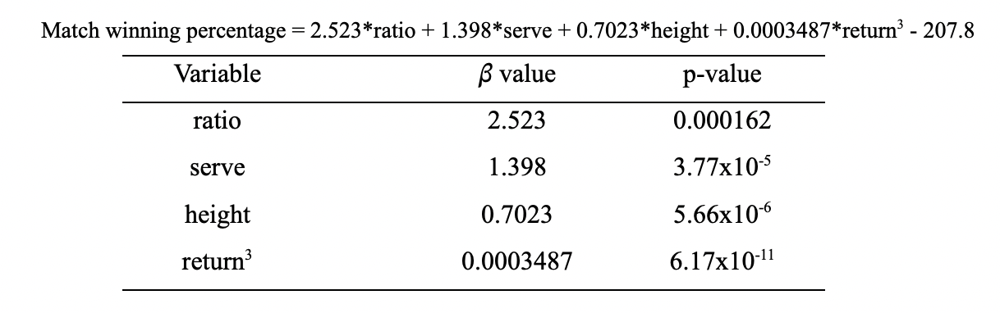

How to Win in Tennis
An analysis of the effect of match statistics on win percentage in professional men’s tennis during the 2022 ATP season
Introduction
With an off-season only a month long and a loaded tournament schedule year-round, professional tennis players on the Association of Tennis Professionals (ATP) Tour have limited practice time to improve their game. Understanding how particular match statistics influence a player’s winning percentage can help ‘to determine the match statistics to which coaches should attend in an effort to mould elite professional players’ during this scarce practice time (Reid, McMurtrie, and Crespo 2010). A greater winning percentage leads to gains in ATP world ranking points, which results in direct entry to more prestigious tournaments and consequently increases financial gains through prize money. This is of great importance because of the high annual cost of travel, coaching and equipment, which ‘can total between $121,000 and $197,000 USD’ for male professionals (Reid et al. 2014). Only an elite few earn lucrative sponsorship deals, meaning that the majority of tennis professionals must rely on prize money to finance both their life on tour and their life after retirement from professional tennis.
With an off-season only a month long and a loaded tournament schedule year-round, professional tennis players on the Association of Tennis Professionals (ATP) Tour have limited practice time to improve their game. Understanding how particular match statistics influence a player’s winning percentage can help ‘to determine the match statistics to which coaches should attend in an effort to mould elite professional players’ during this scarce practice time (Reid, McMurtrie, and Crespo 2010). A greater winning percentage leads to gains in ATP world ranking points, which results in direct entry to more prestigious tournaments and consequently increases financial gains through prize money. This is of great importance because of the high annual cost of travel, coaching and equipment, which ‘can total between $121,000 and $197,000 USD’ for male professionals (Reid et al. 2014). Only an elite few earn lucrative sponsorship deals, meaning that the majority of tennis professionals must rely on prize money to finance both their life on tour and their life after retirement from professional tennis.
Previous analysis of ATP Tour data from the 2007 season carried out by Reid et al. (2010) observed the relationship between 14 tennis match statistics and a player’s world ranking (Reid, McMurtrie, and Crespo 2010). They found that second serve return points won and second serve points won were the most significant predictors of a player’s world ranking. The second serve statistic provides insight on a player’s ability to win points that generally wouldn’t be won: servers take less risk when hitting second serves, as an error here automatically loses them the point. Thus, these are often weaker and less well-placed than first serves, giving the returner a better chance of returning the serve and of winning the point, hence the value of looking at the second serve return statistic as well. In addition to these serve and return statistics, this study will consider players’ winners to unforced error ratio, which is a good indicator of both tactical aggressiveness and consistency, and the percentage of points played at the net, which is another measure of aggressiveness. These statistics were not considered in Reid et al.’s (2010) study (Reid, McMurtrie, and Crespo 2010). This analysis will also differ from the aforementioned study in that the response variable observed will be winning percentage rather than world ranking. Additionally, player age and height will be included in our selection of explanatory variables.
Previous literature suggests the presence of a height advantage in men’s professional tennis: in Ovaska et al.’s (2014) analysis of ATP match data from 2000 to 2009, it was found that ‘a higher ranked taller player was 3.1% more likely to win, other things constant,’ than a shorter player (Ovaska, Sumell, and Sumell 2014). However, this ‘advantage diminishes with increasing height’ as at very tall heights players tend to lose mobility (Ovaska, Sumell, and Sumell 2014). The same study found that ‘higher ranked older players have a disadvantage over their younger opponents’ and that ‘the larger the disparity in age, the larger the probability that the older player actually loses’ (Ovaska, Sumell, and Sumell 2014). Of course, a coach and player cannot work on changing height or age, but this previous literature suggests that these factors should be taken into account when attempting to predict a male professional tennis player’s winning percentage.
Previous literature suggests the presence of a height advantage in men’s professional tennis: in Ovaska et al.’s (2014) analysis of ATP match data from 2000 to 2009, it was found that ‘a higher ranked taller player was 3.1% more likely to win, other things constant,’ than a shorter player (Ovaska, Sumell, and Sumell 2014). However, this ‘advantage diminishes with increasing height’ as at very tall heights players tend to lose mobility (Ovaska, Sumell, and Sumell 2014). The same study found that ‘higher ranked older players have a disadvantage over their younger opponents’ and that ‘the larger the disparity in age, the larger the probability that the older player actually loses’ (Ovaska, Sumell, and Sumell 2014). Of course, a coach and player cannot work on changing height or age, but this previous literature suggests that these factors should be taken into account when attempting to predict a male professional tennis player’s winning percentage.
For this study, we will analyze singles match data from the 2022 ATP Tour to attempt to build a model predicting a player’s match winning percentage in a season based on age, height and 4 match statistics. We aim to show the effect of changes in each match statistic on a touring professional’s winning percentage at a certain height and age, providing guidance for coaches and players on which tactical aspects to work on. The data and variables we will consider will be covered in the methods section, model fitting and inference will be found in the data analysis section, and the conclusion will summarize findings and comment on possible model improvements.
Methods
Match statistics and biographical player information used in this analysis were obtained from the Ultimate Tennis Statistics website 1. The statistics found on this website are gathered from the open-source data repository by Jeff Sackmann 2, storing in-match statistics recorded from every ATP match since 1991. The response variable we will try to predict is winning percentage, which is the percentage of matches won by a player during the tennis season (January to November). We consider winning percentage rather than number of matches won to account for the different numbers of matches played across a season by different players due to factors such as injury and tournament schedule. The predictor variables that we will consider are player height in cm (‘height’), player age in years as of the end of 2022 (‘age’), the percentage of second serve points won when returning (‘return’), the percentage of second serve points won when serving (‘serve’), the ratio of winners to unforced errors (‘ratio’), and the percentage of points played at the net (‘net’).
Considered in this study were the 100 male professional tennis players with the highest number of singles matches played on the ATP Tour in 2022. This was done because a statistic is more likely to be representative of a player’s skill in that tactical area over a large number of matches played in a variety of conditions, which can affect outcomes. As this is a ranking, the data was not randomly sampled. All of the players in this analysis regularly competed on the ATP Tour during the 2022 season and as such the results will only apply to touring professional male tennis players. Additionally, this analysis will only consider singles tennis, which is tactically very different to doubles. Thus, conclusions drawn from singles data cannot be directly applied to doubles. It must also be noted that the observations in this sample are not independent, as each win must necessarily be accompanied by a loss. However, this dependence is negligible over the course of a season. Additionally, as the sample only contains 100 players out of the population of touring professionals, each player’s winning percentage is influenced by certain wins and losses against other players not sampled, which diminishes this dependence. Each player’s winning percentage is a function of the number of matches he competes in, which varies from player to player. Thus, unless the winning percentage were 100 (which does not occur in the sample), knowing the winning percentage for one player does not reveal information about the winning percentage for another player on the tour. As the dependence of the observations is negligible here, we can conclude that the independence assumption is reasonably fulfilled and proceed with fitting a multiple regression.
Data Analysis
The variables included in the final model were height, serve, ratio, and return cubed, with the slope coefficients and associated p-values displayed in Table 1 and a y-intercept of -207.8. All four predictor variables were significant at the 0.001 level. The adjusted R-squared for the model was 0.6037, with a residual standard error of 8.678. The model can be represented by the following equation:

This model was arrived at via the following procedure. With assistance from the Box-Cox function in R, it was deemed that no transformation of the winning percentage response variable was necessary. Each of the 6 predictor variables were then input into the Box-Cox function to verify if any transformations were required. The suggested transformations were applied and added to the data frame only if the resulting variable remained interpretable. The transformed variables that were added to the data frame were the reciprocal of age, the square root of ratio, the natural logarithm of net, and return cubed. The updated data frame was then subjected to both stepwise AIC and relaxed LASSO. Both methods suggested adding height, serve, ratio, and return cubed to the model. The addition of other variables was suggested, but these fits yielded insignificant p-values and had negligible effects on adjusted R-squared values. For the sake of model simplicity and interpretability, it was decided to include height, serve, ratio, and return3 in the final model, with ùõΩ values and p-values shown in Table 1.
The appropriateness of this multiple linear regression model can be evaluated via the residual plots shown in Figure 1. It can be seen in Figure 1a) that the data follows a linear trend as the average residual locally appears to be around 0 for these fitted values, with the exception of one outlier. Therefore, the linear assumption is satisfactorily fulfilled. Figure 1c) indicates that homoskedasticity is also satisfied as the studentized residuals are structured roughly in a band either side of the red line. This line is not perfectly straight, but from the general distribution of the studentized residuals we can reasonably say that the homoskedasticity assumption is not violated. The Q-Q plot in Figure 1b) shows that the normality of residuals assumption is satisfied. The outlier at observation 4, shown in the residuals vs. leverage plot in Figure 1d), has a high leverage but a Cook’s Distance less than 0.5. This low Cook’s Distance implies that this is a benevolent leverage point that is not changing the response surface in a concerning way. Its omission is therefore not necessary: in fact, a benevolent high-leverage point is desirable as points far away from the rest of the data lead to more accurate slope estimates for the variables in the model.
The final model tells us that 0.6037 of the variance in a touring professional’s winning percentage can be explained by a combination of height, the cubed percentage of second serve points won when returning, the ratio of winners to unforced errors, and the percentage of second serve points won when serving. How can this model be used for informative purposes? It tells us that, with the other three predictor variables constant, a unit increase in ratio will increase winning percentage by 2.523, while a unit increase in the percentage of second serve points won when serving will increase winning percentage by 1.398. For every cm in height advantage a player has over his opponents, with all other variables constant, his winning percentage is expected to increase by 0.7023. As the return variable was subjected to a cubic transformation, it is perhaps simpler to see its effect on the winning percentage through an example. If a player of height 180cm, serve 47% and ratio 1.25 increased his return value from 50% to 51%, his winning percentage would increase from 31.06% to 33.73%, based on the model’s fitted values. If instead this same player’s return value remained at 50%, with serve and height constant, his ratio of winners to unforced errors would have to increase from 1.25 to 2.31 to reach this improved winning percentage. With height, return and ratio constant, this same player would need to improve his serve value from 47% to 48.91% to improve his winning percentage from 31.06% to 33.73%. Lastly, with serve, return and ratio constant and equal to the initial values specified above, the model tells us that a height increase from 180 cm to 183.8 cm would improve the winning percentage to 33.73%.
Confidence intervals can be used to estimate the value of the mean winning percentage for a touring professional with specific predictor variable values. In this case, our confidence interval tells us that we are 95% confident that the mean winning percentage for a touring professional 188cm tall with 50.96% of second serve points won when serving, 51.22% of second serve points won when returning and a 1.073 ratio of winners to unforced errors is expected to lie between 50.29% and 55.64%. Prediction intervals were also obtained for each observation in the sample. These estimate the value of the winning percentage for a specific new observation with defined values for each predictor variable. Constructing a prediction interval using the same predictor variable values as above (188cm, 50.96%, 51.22%, 1.073) tells us that we are 95% confident that the winning percentage for the next touring professional with these predictor values will lie between 35.53% and 70.40%. This interval is much larger than the confidence interval as it accounts for the many sources of noise specific to that tennis player that cannot be explained by the variables in our model.
Conclusion
Overall, four variables were found to be significant in explaining variability in match winning percentage. These were height in cm, the ratio of winners to unforced errors, the percentage of second serve points won when serving, and the cubed percentage of second serve points won when returning. A multiple linear regression model was constructed using these four explanatory variables. Evaluation of residual plots concluded that the model was suitably appropriate as it did not violate any of the linear regression assumptions. The adjusted R-squared value of 0.6037 for this fit indicates that 60.37% of the variability in match winning percentage can be explained by the variables included in the model. The remaining variability can be attributed to hundreds of additional in-match statistics that could be considered, as well as the factor of luck, especially as tennis is a sport where the outcome of a handful of key points can determine the result of a match.
This follows Reid et al.’s (2010) findings that the percentage of second serves won when both serving and returning are significant in predicting world ranking, as a good ranking is a direct consequence of high winning percentage (Reid, McMurtrie, and Crespo 2010). Additionally, these slope coefficients provide support for Ovaska et al.’s (2014) claim that there is a height advantage in men’s tennis but, contrary to these authors’ findings, does not suggest that this advantage subsists past a certain height (Ovaska, Sumell, and Sumell 2014). If a greater number of very tall touring professionals were sampled, this claim could be better evaluated. The fact that there are very few touring professionals above 200 cm could suggest that the height advantage decreases past a certain point, otherwise professional tennis, like basketball for example, would have higher numbers of very tall players. This work also revealed that a player’s ratio of winners to unforced errors is an important predictor, which had not been tested in either of the aforementioned studies. However, neither the percentage of points played at the net nor age proved significant in predicting winning percentage. This is contrary to Ovaska et al.’s (2014) finding that younger professional tennis players have an advantage over their older counterparts (Ovaska, Sumell, and Sumell 2014).
Importantly for real-world applications, each of the four predictor variables has a positive slope coefficient, meaning that increasing any of these values has the ability to increase winning percentage. While height is not something that players and coaches can change, knowing that height affects winning percentage suggests that shorter players must seek increased gains in tactical areas compared to their taller counterparts. It is therefore up to the coach and player to decide which of these three significant match statistics to focus on, depending on the player’s current skill set, in order to improve match winning percentage and consequently ranking and prize money earnings.
Analysis of outliers also provides important information about the limitations of the model. An outlier with a lower winning percentage than expected was detected. This data point corresponds to Novak Djokovic, one of the most successful male players of all time, winning 22 Grand Slam singles titles 3. The fitted value for a player with his explanatory response values was 95.78%, while his actual winning percentage was 87.23%. This very high fitted value results from his exceptional match statistics over a season. Out of a year’s worth of matches, it is expected for even the most elite players to occasionally underperform and lose, without their match statistics over the year being significantly affected. An added problem that comes from attempting to predict percentages is that there is a floor at 0% and a ceiling at 100% which the model does not take into account. For example, some of the prediction interval values were above 100%, which of course is not possible. This model could be improved by analyzing a response variable that, while not a percentage, can still provide information on a player’s success, for example number of wins per month, or total ranking points won in the year.
References
Footnotes
Available at Ultimate Tennis Statistics, accessed 3/29/23.↩︎
Available at GitHub - Jeff Sackmann Tennis ATP, accessed 3/29/23. winning 22 Grand Slam singles titles.↩︎
Retrieved from Sporting News, accessed 3/31/23.↩︎